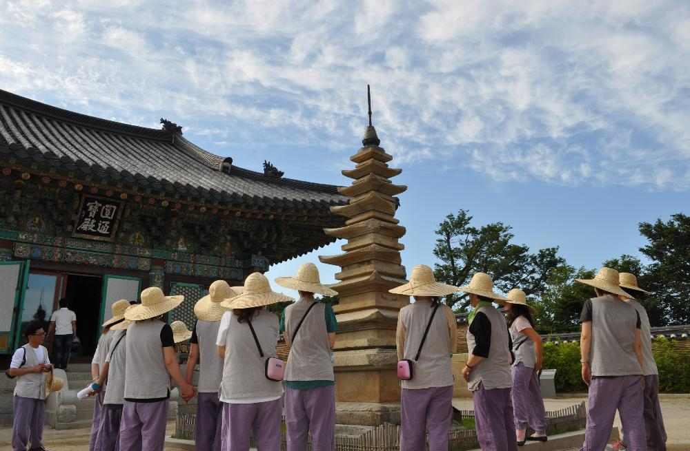

- 낙산사 템플스테이
- 서울숲
- 부암동
- egoing
- k8805
- eunbi
내 스타일 여행지
낙산사 템플스테이는 최고당. 핸드폰 없이 자연속에서 푹 쉴 수 있다.
휴식형 "꿈, 길 따라서" 프로그램 설명
“꿈, 길 따라서” 휴식형 템플스테이는 바쁜 일상에서 바쁨을 잠시 내려놓고 자신만의 시간, 자신과의 대화를 통해 마음을 쉬어가기 위한 프로그램으로 예불, 공양, 운력 외에 해맞이, 독서, 기도 등 개인이 자율적으로 자아성찰의 시간을 갖는 프로그램입니다.

대학생 참가비는 중고생 30,000원과 동일합니다.
참가시 학생증 필히 지참하시기 바랍니다.
휴식형 "꿈, 길따라서"를 신청하실 경우 스님과의 상담은 1인 1만원이며 그룹상담입니다.
108염주 만들기 체험을 하실 경우 체험비는 1인 5천원입니다.
취숙헌(한옥)이 마감되어 인월요((구)유스호스텔)을 이용하실 수도 있습니다.
매주 월요일은 휴무입니다.
휴식형 1박~2박만 가능, 화~일요일체험형 매월 2회, 토~일